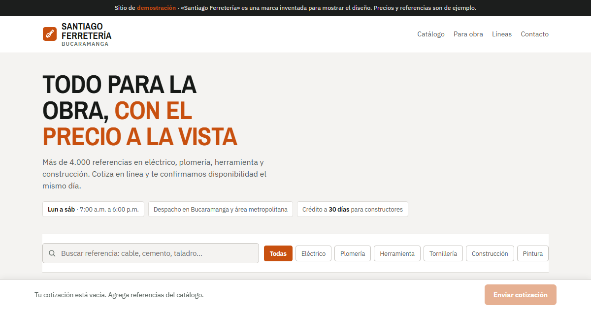
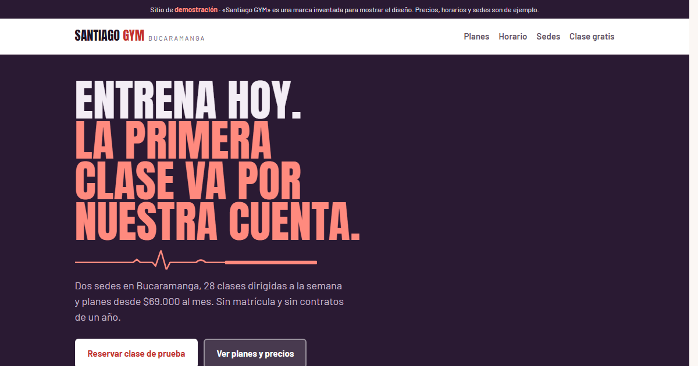

Soporte, código y trato con el cliente.
Soy Joel Santiago Sierra Leon. Trabajo como auxiliar de soporte técnico y atención al cliente, tengo formación en desarrollo de software y hago sitios web para negocios de Bucaramanga.
Dónde trabajo
-
Junio 2025 — Actualidad
Auxiliar de Soporte
Smart Data & Automation- Soporte técnico a clientes y solución de incidencias.
- Gestión de tickets de principio a fin en Freshdesk: diagnóstico, seguimiento y cierre de casos técnicos.
- Capacitación a clientes en el uso de las plataformas.
Dónde estudié
-
2024
Entrenamiento en Desarrollo de Software
Campuslands · BucaramangaPython, HTML y CSS, JavaScript, MySQL y Java, con proyectos y exámenes por módulo. Los repositorios de esa etapa están en mi GitHub.
-
2023
Bachiller
Colegio Monterrosales Homeschool Colombia
Certificados de Microsoft Learn
Dos rutas de aprendizaje completas y 11 módulos. Cada logro se puede verificar en la página oficial de Microsoft.
13 logros verificables
Ver los 6 módulos de la ruta
- Escritura del primer código de C#5 nov 2024Verificar
- Almacenar y recuperar datos mediante valores literales y variables en C#11 nov 2024Verificar
- Realizar formato básico de cadenas en C#11 nov 2024Verificar
- Realizar operaciones básicas en números en C#11 nov 2024Verificar
- Proyecto guiado: Cálculo e impresión de calificaciones de alumnos12 nov 2024Verificar
- Proyecto guiado: Cálculo del GPA final12 nov 2024 · evaluación aprobadaVerificar
Lo que he construido
-
2026 · Proyecto propio
Desarrollo web para negocios
Sitios para negocios de Bucaramanga. Las demos de ferretería, gimnasio y tienda de ropa están hechas en HTML, CSS y JavaScript, publicadas en GitHub Pages.
-

Abrir la demo de ferretería -

Abrir la demo del gimnasio -
 Abrir la demo de ropa
Abrir la demo de ropa
Las tres son demostraciones con marcas inventadas: «Santiago Ferretería», «Santiago GYM» y «Santiago Prendas».
-
-
2024 · Campuslands
Sistema de Gestión de Usuarios
Sistema en Python para que un administrador gestione usuarios, estados, horarios y temas de docencia.
-
2024 · Campuslands
Kario Media
Proyecto en HTML y CSS con animaciones de carga y diseño adaptable a varios dispositivos.
-
2024 · Campuslands
CampusBike
Base de datos MySQL para gestionar usuarios, ítems y ventas mediante consultas y subconsultas SQL.
Con qué trabajo
Técnicas
- Soporte técnico
- Atención al cliente
- Python
- JavaScript
- HTML y CSS
- MySQL
- Java
- .NET
- Excel
- Git y GitHub
Competencias
- Responsable
- Persistente
- Trabajo en equipo
- Comunicación
- Autodidacta
Idiomas
- Español — nativo
- Inglés — intermedio (B1–B2)
¿Hablamos?
Para un sitio web, escríbame por WhatsApp. Para temas laborales, también estoy en LinkedIn y GitHub.